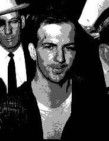
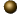
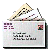

The Kennedy
Assassination
By John McAdams
© 1995-2006
"He didn't even have the satisfaction of being killed for civil rights . . . . It's — it had to be some silly little Communist." — Jackie Kennedy, on hearing that a leftist had been arrested for her husband's murder.
It's the most controversial case in modern American history. Did
Lee Harvey Oswald kill John Kennedy by himself, or did a conspiracy
do it? And if a conspiracy did it, did the conspiracy include Oswald?
If you are like most Americans, you believe that a conspiracy killed
Kennedy. And if you are like most Americans, you have heard a vast number of bogus factoids about the case.
This web site is dedicated to debunking the mass of misinformation and disinformation surrounding the murder of JFK. If you are believer in Oswald as a lone gunman, you are likely to enjoy this web site, since most of that misinformation and disinformation has come from conspiracists. But if you are a sophisticated conspiracist, you likely understand that the mass of silly nonsense in conspiracy books and documentaries does no service to the cause of truth in the assassination, and simply buries the "case for conspiracy" under layers of bunk.
Regardless of what you believe, several web sites, mostly conspiracy-oriented
are worth checking out. And you may also want to check out my list of recommended books on the assassination.
What sort of evidence is there?
Dealey Plaza
What about those witnesses? Didn't everyone hear shots from the Grassy Knoll? What about the Tague wounding? Who was the
"Umbrella Man?" Was the rifle recovered really a Mauser? Does "acoustic evidence" show a shot from the Grassy Knoll? Were the Three Tramps suspicious? How could Kennedy's head go "back and to the left?"
The Single Bullet Theory
You've seen Kevin Costner give the conspiracy version of the Single Bullet
theory. You know: Connally seated directly in front of Kennedy, at the same
height, and facing straight ahead. Was that really what happened?
Lee Harvey Oswald
What sort of person was he? Did he really have "Top Secret" security
clearance? Did he shoot at General Walker? Were there two Oswalds? If Oswald shot Kennedy, what was his motive? Was the man exhumed
in 1981 really somebody besides Oswald?
Jim Garrison and New Orleans
Did Oswald really share an office with Guy Banister? Did Clay Shaw really
use the alias "Clay Bertrand?" Why did Oliver Stone make a movie about the
Shaw trial and not even mention Perry Raymond Russo? Did David Ferrie
die a "mysterious death?" What about Jim Garrison and the Mafia?
Medical Evidence
Did the bullet that hit Kennedy in the back penetrate only an inch and fall
out? Was Kennedy hit in the head by a bullet from in front? Are the
autopsy photos and x-rays faked? Did all the doctors at Parkland
Hospital believe that Kennedy was hit in the front of the neck, and if
so, are their opinions decisive evidence that that is what happened? Was the back of Kennedy's head blown out? Are the autopsy photos faked?
Bogus Evidence
Did you know that all the evidence in this case proven
to be forged has been on the conspiracy side? One key piece originated with the KGB! Did you know that
the "mysterious deaths" are virtually all not so "mysterious" when you
look at them closely? Do you trust authors like Mark Lane to tell you the
truth about what witnesses said?
Jack Ruby
The "lone nut" theory of the assassination is really the "two lone nuts" theory. What sort of
person was Jack Ruby? A mobster? An intelligence agent? A small-time hustler?
The sort of volatile character who might really have shot Oswald out of righteous anger?
Oliver Stone's Movie "JFK"
We expect Hollywood movies to take some liberties with the historical record. But what do we think when Hollywood turns history on its head? Oliver Stone wants to overturn the verdict in the Clay Shaw trial. The jury found that District Attorney Jim Garrison had no case — so Stone invents a case on celluloid. Just how honest was Oliver Stone, Shaw's Hollywood prosecutor?
John Kennedy: Liberal Martyr?
For some in the conspiracy crowd, John Kennedy was a liberal saint, who was going to implement policies that would bring America into a new Utopia. So, of course, a threatened Power Elite had to kill him. Was Kennedy the kind of left liberal who threatened established interests? Was he a hero of Civil Rights? Had he decided to pull out of Vietnam? Historian Eric Paddon dissects these claims in a series of essays based on his posts on the Internet.
Assassination Logic
Some notions about logic, probability and statistics necessarily underlie all discussion of "conspiracy" or "lone assassin." Does the lone assassination theory involve too many implausible "coincidences?" Are there a suspicious number of "connections" between various figures in the case? Is the Single Bullet Theory highly "improbable?"
Assassination Witnesses
It writings about the assassination, as in real-world criminal justice, witness testimony looms large. But just how reliable are the witnesses? How many witnesses are just flat out telling tall tales? How often are apparently sober and reliable witnesses just flat wrong?
Did Oswald Have a Girlfriend in New Orleans?
A woman named Judyth Baker has come forward claiming to have been Oswald's adulterous lover in in summer of 1963, to have participated with him in a secret bioweapons program aimed at killing Castro, and to have inside knowledge of Oswald's "patsy" role in the assassination. It's a good story, and she got a chance to tell it on the History Channel in November 2003. But is it the truth?
The Assassination Context
What we think about the assassination is dependent on what we think about history, and about the behavior of government officials and bureaucrats. Was Kennedy a radical who threatened the status quo? Did top administration officials order a coverup of a conspiracy soon after the assassination? If the FBI and the CIA withhold documents, does this mean that they are protecting assassination conspirators?
Release the Documents!
This has long been the cry of the conspiracy theorists. Supposedly, the documents show that a conspiracy killed Kennedy. In fact, the government in the 1990s released a massive number of documents. The Assassination Records Review Board had a mandate to identify and oversee the release of documents in government hands, and in private hands.
Hear History Happen
Recording devices monitored the two radio channels used by the Dallas Police Department, and these recordings are a vivid "real time" account of the frenzy of activity that followed the shooting. Here are selected audio clips beginning a couple of minutes before the assassination and ending with the arrest of Oswald in the Texas Theatre.
Newsgroup
Do you want to ask for more information, or discuss or debate
some of the issues raised here? The moderated newsgroup:
alt.assassination.jfk
run by Peter Fokes and John McAdams, is the place to go — whether you are a "newbie" with questions to ask, or a researcher with some evidence you want to present to the research community.
|
Featured Articles
I don't necessarily agree with all the conclusions these authors have drawn, but everything here is a solid piece of work that deserves your attention. All are copyrighted, and all posted here with permission.
 Mel Ayton has a news essay on Conspiracy Thinking and the John F. Kennedy, Robert Kennedy and Martin Luther King Assassinations." Ayton believes that all conspiracy thinking has several common threads.
Mel Ayton has a news essay on Conspiracy Thinking and the John F. Kennedy, Robert Kennedy and Martin Luther King Assassinations." Ayton believes that all conspiracy thinking has several common threads.
- Recent months have seen a spate of new books and new theories
about the assassination, including a German television documentary called "Rendezvous With Death" from Wilfried Huismann and Gus Russo and the book
Ultimate Sacrifice by Lamar Waldron and Thom Hartmann. Do we have any compelling new evidence or
interpretations here, or is this just more unsupported conspiracy theorizing? A new essay by Mel Ayton critically examines the evidence.
- "Rendezvous With Death," claims to have discovered
compelling new evidence that Fidel Castro had John Kennedy killed, using Lee Oswald as hit man and patsy. It has received a mixed reception, at best. A new essay by David Lifton accepts, for the sake of argument, the data produced by the authors of "Rendezvous With Death" and points out that it could be interpreted in a way very different from what the documentary proposes.
- Joan Mellen's new book A Farewell to Justice attempts to defend District Attorney Jim Garrison, whose ill-conceived campaign to convict Clay Shaw of the JFK assassination was the subject of the movie "JFK." Yet, like the movie, Mellen has fallen into the trap of believing
the most incredible sources and adopting the most outlandish theories in an attempt to vindicate the DA, as Patricia
Lambert shows in this review of the book.
- Mellen's book, a full-bore flat out defense of Garrison, repeats many of the charges against various individuals
that have been going around in Garrisonite circles for years. One target of the Garrisonites has been
Canadian Louis M. Bloomfield, supposed kingpin in a sinister right-wing network that had Kennedy killed.
Paul Mitchinson debunks this in a posting on his blog, and reveals much about the ideological agenda behind the attack.
- Mellen's book has been scrutinized by other JFK researchers and come
up short. Mel Ayton, and an extended and detailed review concludes that “Mellen’s book has the façade of scholarship but it is in fact a hocus pocus act.”
- The History Channel has a record of showing reasonably reliable documentaries on subjects like wars, Nazis, the history of popular culture and the like. But their record on the Kennedy assassination is abysmal. The series "The Men Who Killed Kennedy" has a record of touting the most implausible and bizarre theories. But they managed to reach a new low with an episode titled "The Guilty Men" which fingered Lyndon Johnson as the prime mover behind the assassination. In this article, journalist and historian Max Holland dissects the entire series, and especially the installment on LBJ. And veteran JFK researcher Dave Perry critiques the reliability of the supposed "evidence" in an article from his website. And one of the accused conspirators, Malcolm Liggett, is suing The History Channel over the supposed "documentary."
- The "acoustic evidence" got a boost in 2001, when a scientist named D.B. Thomas published an article claiming to have corrected the statistical treatment in earlier studies and found clear evidence of a shot from the Grassy Knoll. However, a recent careful study of the timing on the events on the Dallas Police tape by Michael O'Dell shows that the "shots" happened too late to actually be shots. Thus the "acoustic evidence" was to acoustic science what cold fusion was to physics: an example of how even reputable scientists can jump to conclusions when faced with the possibility of an "explosive" discovery.
- Of course there are all kinds of wild and woolly theories connecting Oswald to the CIA. But some responsible and sober researchers have argued that the Agency knew more about and had a more intense interest in Oswald than they have ever admitted. One such researcher is Jefferson Morley, world news editor of washingtonpost.com. His article "What Jane Roman Said" outlines the evidence.
- Among conspiracy-oriented researchers, there is a deep gulf between the more moderate and sensible ones, and those who'll promote any bogus piece of "conspiracy evidence." Ulric Shannon is one of the former, and he explains in this essay why he thinks the "I'll believe anything that implies conspiracy" crowd is so harmful.
- Researcher Bill Drenas debuted his essay "Car #10, Where Are You" on this web site in 1997. The current version has some minor factual corrections and much new material. Not pushing any conspiracy theory, but not a debunking exercise either, it's a very careful attempt to nail down Tippit's whereabouts — minute by minute — on the day he died.
- A related essay from Drenas involves the Top Ten Record Shop. This classic Oak Cliff location was where Officer Tippit stopped shortly before he was shot. It's still in business, and you'll almost certainly want to visit when you are in Dallas.
- Long-time researcher Gus Russo, author of the recently released book Live By the Sword has an interesting story to tell about his own personal commitment to the case, and his changing views about who killed JFK, and his changing views of John and Robert Kennedy, excerpted from his book.
- Canadian Peter Whitmey is a conspiracy-oriented researcher who sometimes takes issue with conspiracy arguments and witnesses. His articles on this site deal with issues such as a possibly sinister conversation overheard in a Winnipeg airport, a little-known New Orleans figure named Clem H. Sehrt, an interesting connection between Oswald biographer Priscilla McMillan and a rather suspect New Orleans witness named Ron Lewis, and the phone records of David Ferrie, accused plotter.
- Gerald Posner and his book Case Closed have come under heavy attack from the community of conspiracy-oriented "researchers." In "Defending Posner" Michael Russ compares what the conspiracy buffs say Posner said to what Posner actually said. It seems buffs are no more accurate when attacking their enemies than when discussing the assassination.
- Researcher David Perry has been "doing" the assassination for several years, and has seen a continual stream of "revelations" come and go. In his essay "A Few Good Men" he discusses publicity-seeking, and particularly the Loy Factor story.
- Tony Marsh's essay "Circumstantial Evidence of a Head Shot From The Grassy Knoll" is now available online. Based on careful analysis of the movements of the occupants of the presidential limo, of the HSCA acoustic evidence, and of a "jiggle analysis" of the Zapruder film, it represents a bold and interesting attempt to put the evidence together in a compelling way. It was originally presented at the 1993 Third Decade Conference.
- Just how many different people have been accused of being (or have confessed to being) either a shooter or an accomplice in Dealey Plaza? Researcher David Perry has compiled the most complete known list. His Rashomon to the Extreme! is that list. Of the 68 people on this list, at least one is guilty.
- The essay, A Conspiracy Too Big by Fred Litwin asks about the credibility of any theory that holds that a conspiracy faked all the
evidence that conspiracy theorists say is faked.
- John Locke's FAQ (Frequently Asked Questions) outlines the evidence, from the perspective of a person who believes Oswald did it alone. A good briefing for someone who has only read conspiracy books, and wants the other side of the story.
- A Bad Case of Deja Vu, another essay by John Locke, compares the O.J. Simpson defense to conspiracy thinking in the Kennedy assassination. Would the intellectual habits of the conspiracy buffs have let O.J. go free? Locke says "yes."
Do you have comments on this web page? Want to report
some technical problems? Send E-mail to John McAdams
You can now search an index containing every document on this site.
Visit the new Photo Gallery with a variety of interesting images.
Take a look at John McAdams' picks of the best resources on other Kennedy assassination web pages. These are "out of the ordinary" offerings by web authors who have made something unique and unusual available on the 'net.